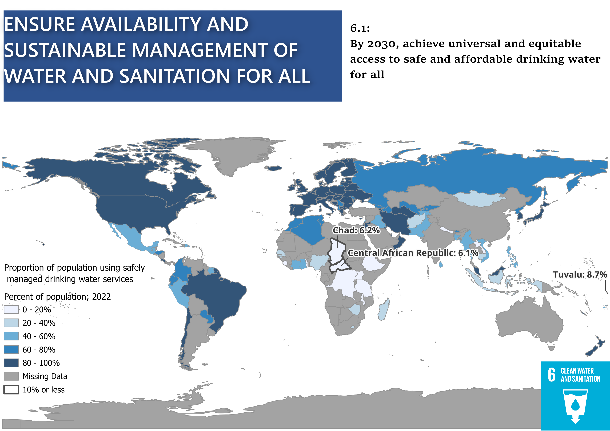

Choropleth Map
The Sustainable Development Goals (SDGs) are a series of goals established by the United Nations in order to tackle global issues by 2030. This map highlights one of these goals (6) and highlights the huge discrepancy in this goal with some countries having 100% of their population being able to access safe water services while others struggle to even reach double digits.
Leaflet
Interactive Map of the same goal: 6.1